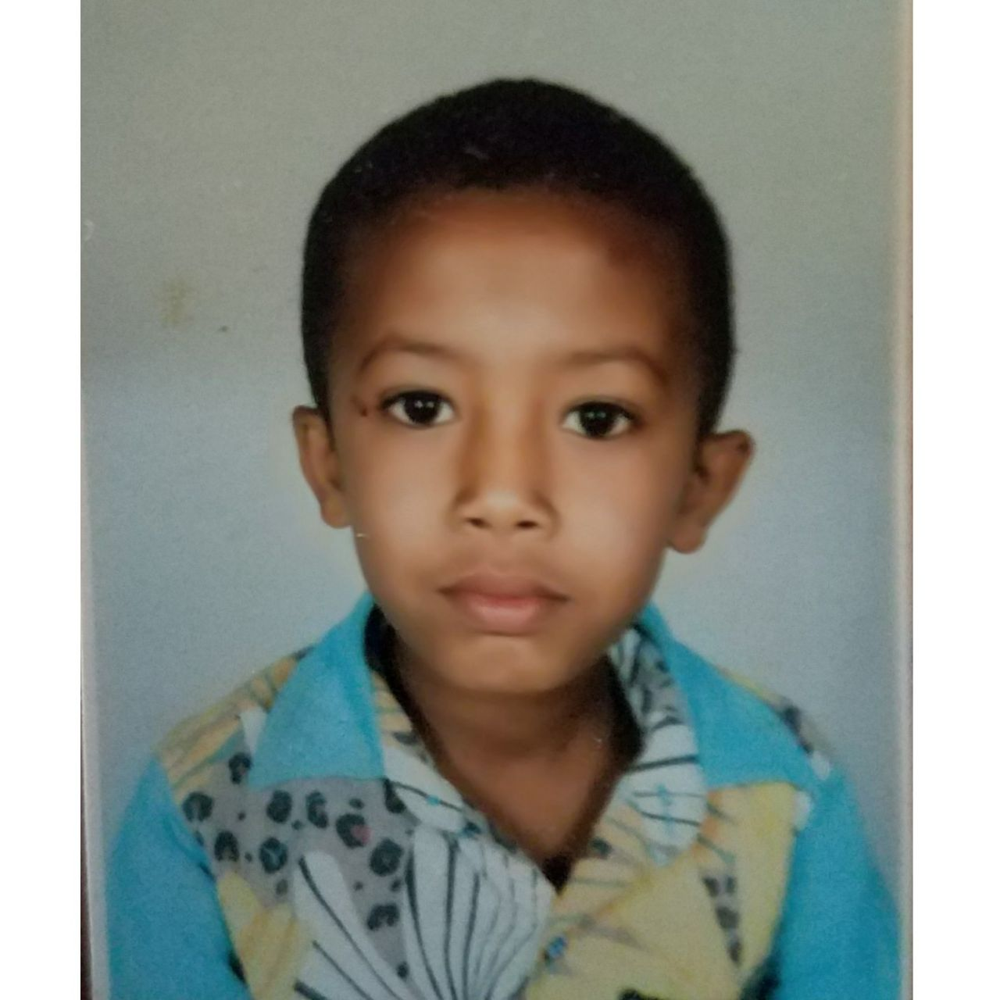

About me |
||||
|
 |
This school made my child hood awesome.I have attended this school until I reached grade 8.Actually,I have a lot of memories on this school. |
My High school life |
This is the beginning of amazing four year memories of my life in Comboni secondary and primary School. High school life. Probably the happiest time of our lives. Many consider their college lives to be the best, but to me high school is better, because it has more fun and less workload. It marks the time when we have just shed our baby skins and we are coming into our bodies. We are young adults now. Our bodies are going through a series of changes. Boys are transforming into young men, while girls are blooming into beautiful young women. At this point, we are mature enough to recognize our interests, our passions and everything else we need to know about ourselves. |
University |
|
As Most of Ethiopian Student I had a wish to Join Addis Ababa Institute of Technology University thanks to God I scored above 570 on my University Entrance exam and I joined Addis Ababa University. This is the beginning of my new life away from my family alone.Actullay,it was very difficult in the first two months but through time I adapted my new life and I started my new challenge to join Software Engneering it was very difficult because it required above 3.5 Gpa but with the help of God and my daily reading I achived it! Know I started my journey to be software Engineer.Currently I am 2nd year Software Engineering student. |
Programming |
| Programming makes me structured: Programming teaches me how to think in an algorithmic and structured manner. Programmers are able to logically define and structure extremely ambiguous problem statements as well. |
| Programming makes me more efficient: There are so many tasks that can be done extremely fast and efficiently if one knows how to code. One can perform thousands of regressions or analyze thousands of scenarios in just a few seconds. |
| Programming makes me more confident: A programmer is generally able to grasp the elements behind technology better and faster. In a world where technology is evolving extremely fast and becoming a critical part of our everyday lives, programming can make one more confident in dealing with situations involving the use of complex technology. |
| Programming is fun: Programmers can design complicated computer games, perform tasks that many people might find impossible to even imagine, and share jokes that only other fellow programmers can understand. Programming is a lot of fun. |
| connect with me | |||
|
|||
| follow me on facebook | |||